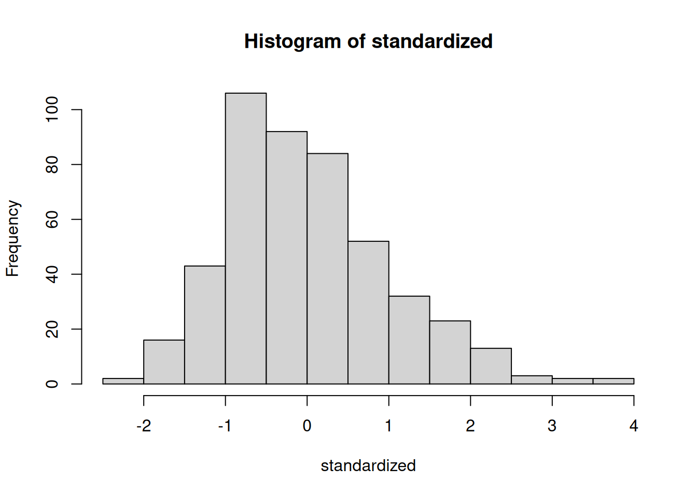
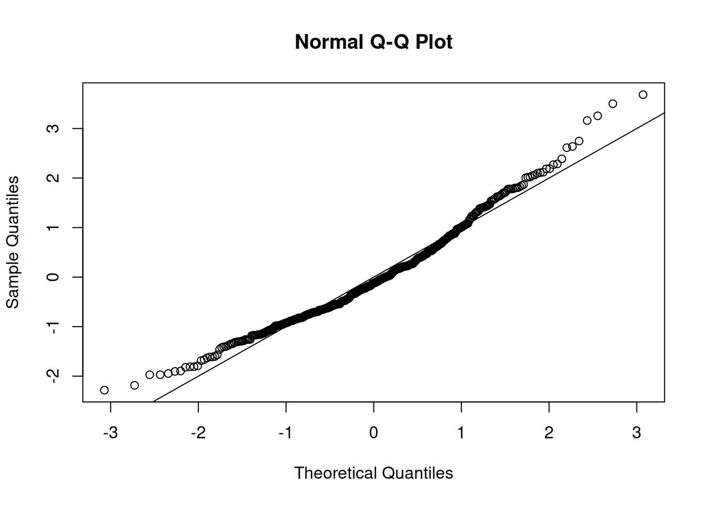
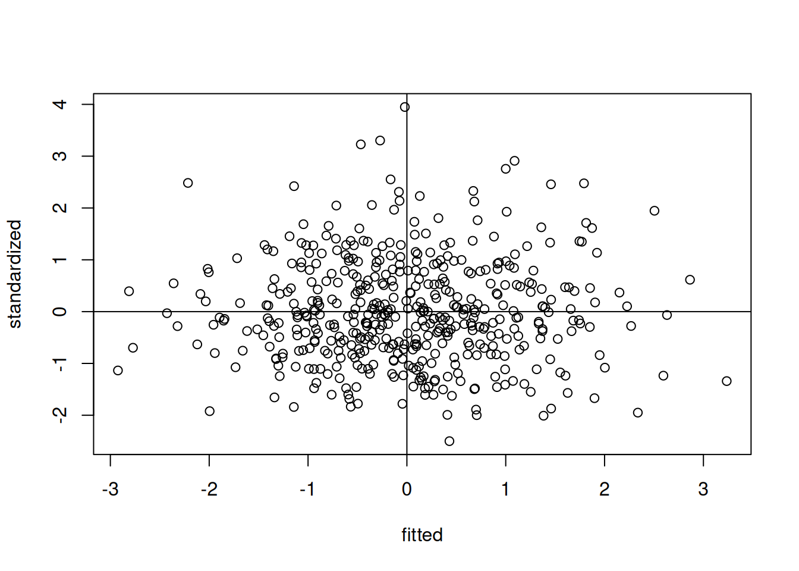
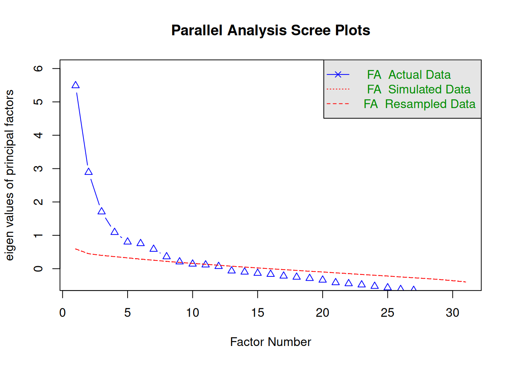
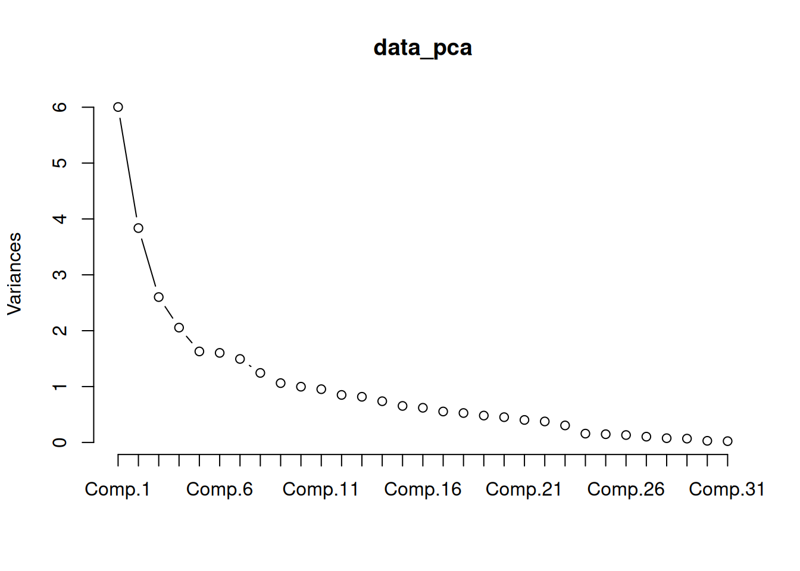
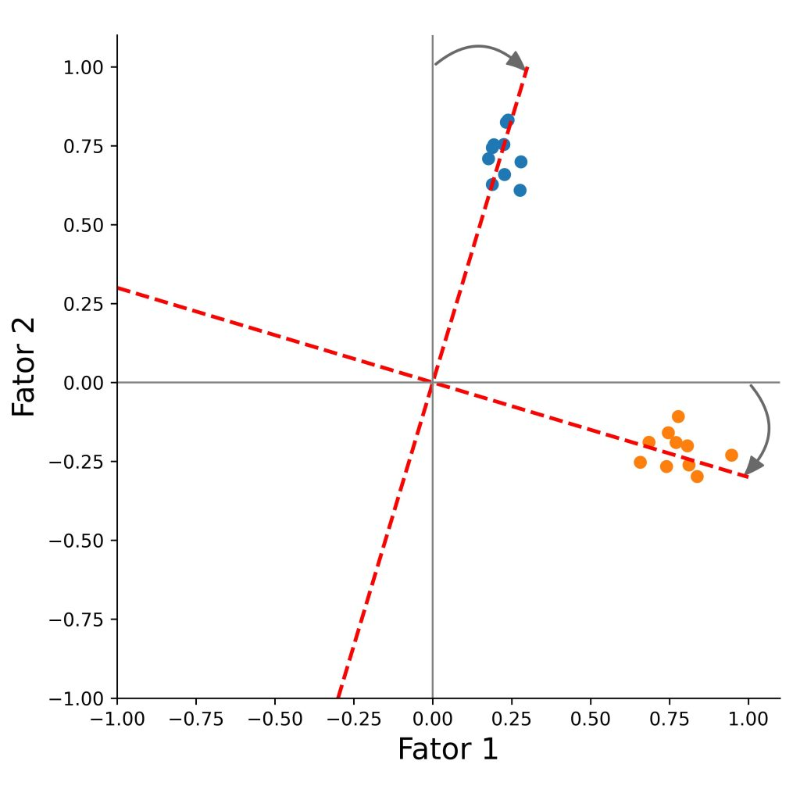
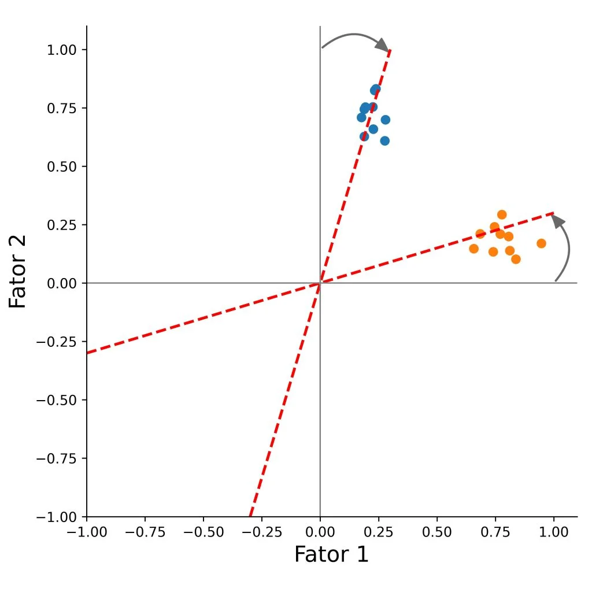
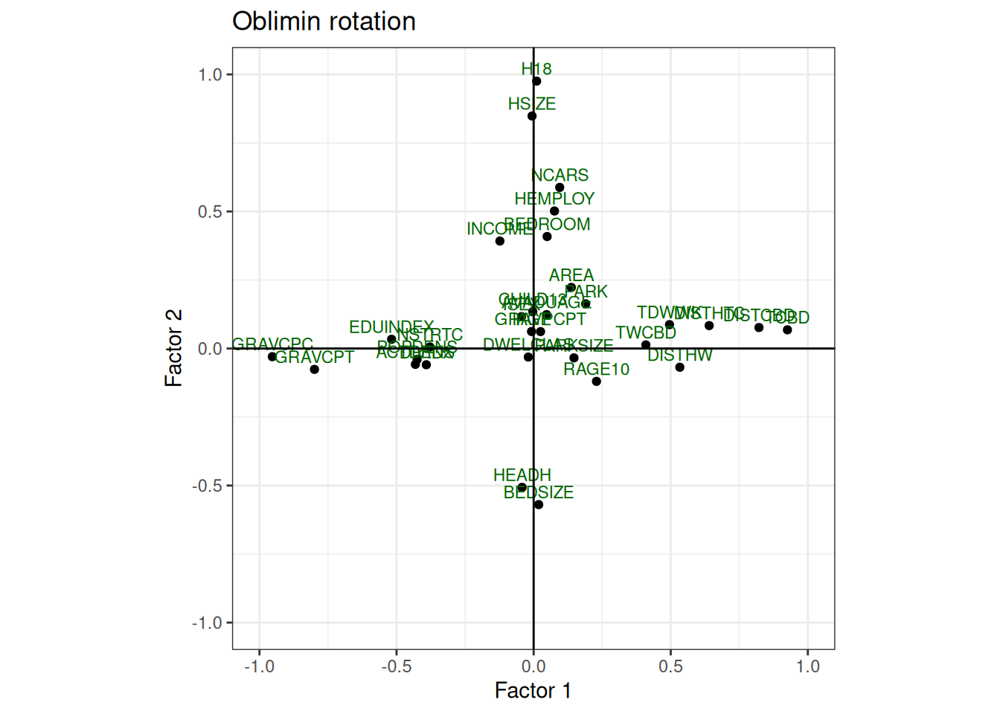

library(tidyverse) # Pack of most used libraries for data science
library(summarytools) # Summary of the dataset
library(foreign) # Read SPSS files
library(nFactors) # Factor analysis
library(GPArotation) # GPA Rotation for Factor Analysis
library(psych) # Personality, psychometric, and psychological research7 Factor Analysis
Do it yourself with R
Copy the script FactorAnalysis.R and paste it in your session.
Run each line using CTRL + ENTER
This exercise is based on the paper “Residential location satisfaction in the Lisbon metropolitan area”, by Martinez, Abreu e Silva, and Viegas (2010) .
The aim of this study was to examine the perception of households towards their residential location considering land use and accessibility factors, as well as household socio-economic and attitudinal characteristics.
Your task
Create meaningful latent factors.
7.1 Load packages
7.2 Dataset
Included variables:
RespondentID- ID of the respondentDWELCLAS- Classification of the dwellingINCOME- Income of the householdCHILD13- Number of children under 13 years oldH18- Number of household members over 18 years oldHEMPLOY- Number of household members employedHSIZE- Household sizeIAGE- Age of the respondentISEX- Sex of the respondentNCARS- Number of cars in the householdAREA- Area of the dwellingBEDROOM- Number of bedrooms in the dwellingPARK- Number of parking spaces in the dwellingBEDSIZE- BEDROOM/HSIZEPARKSIZE- PARK/NCARSRAGE10- 1 if Dwelling age <= 10TCBD- Private car distance in time to CBDDISTTC- Euclidean distance to heavy public transport system stopsTWCBD- Private car distance in time of workplace to CBDTDWWK- Private car distance in time of dwelling to work placeHEADH- 1 if Head of the HouseholdPOPDENS- Population density per hectareEQUINDEX- Number of undergraduate students/Population over 20 years old (500m)
7.2.1 Import dataset
data = read.spss("../data/example_fact.sav", to.data.frame = T)7.2.2 Get to know your dataset
Take a look at the first values of the dataset
head(data, 5) RespondentID DWELCLAS INCOME CHILD13 H18 HEMPLOY HSIZE AVADUAGE IAGE ISEX
1 799161661 5 7500 1 2 2 3 32.00000 32 1
2 798399409 6 4750 0 1 1 1 31.00000 31 1
3 798374392 6 4750 2 2 2 4 41.50000 42 0
4 798275277 5 7500 0 3 2 4 44.66667 52 1
5 798264250 6 2750 1 1 1 2 33.00000 33 0
NCARS AREA BEDROOM PARK BEDSIZE PARKSIZE RAGE10 TCBD DISTHTC
1 2 100 2 1 0.6666667 0.5 1 36.791237 629.1120
2 1 90 2 1 2.0000000 1.0 0 15.472989 550.5769
3 2 220 4 2 1.0000000 1.0 1 24.098125 547.8633
4 3 120 3 0 0.7500000 0.0 0 28.724796 2350.5782
5 1 90 2 0 1.0000000 0.0 0 7.283384 698.3000
TWCBD TDWWK HEADH POPDENS EDUINDEX GRAVCPC GRAVCPT GRAVPCPT
1 10.003945 31.14282 1 85.70155 0.06406279 0.2492962 0.2492607 1.0001423
2 15.502989 0.00000 1 146.43494 0.26723192 0.3293831 0.3102800 1.0615674
3 12.709374 20.38427 1 106.60810 0.09996816 0.2396229 0.2899865 0.8263245
4 3.168599 32.94246 1 36.78380 0.08671065 0.2734539 0.2487830 1.0991661
5 5.364160 13.04013 1 181.62720 0.13091674 0.2854017 0.2913676 0.9795244
NSTRTC DISTHW DIVIDX ACTDENS DISTCBD
1 38 2036.4661 0.3225354 0.6722406 9776.142
2 34 747.7683 0.3484588 2.4860345 3523.994
3 33 2279.0577 0.3237884 1.6249059 11036.407
4 6 1196.4665 0.3272149 1.7664923 6257.262
5 31 3507.2402 0.3545181 11.3249309 1265.239View(data) # open in tableMake the RespondentID variable as row names or case number
data = data |> column_to_rownames(var = "RespondentID")Take a look at the main characteristics of the dataset
str(data)'data.frame': 470 obs. of 31 variables:
$ DWELCLAS: num 5 6 6 5 6 6 4 2 6 5 ...
$ INCOME : num 7500 4750 4750 7500 2750 1500 12500 1500 1500 1500 ...
$ CHILD13 : num 1 0 2 0 1 0 0 0 0 0 ...
$ H18 : num 2 1 2 3 1 3 3 4 1 1 ...
$ HEMPLOY : num 2 1 2 2 1 2 0 2 1 1 ...
$ HSIZE : num 3 1 4 4 2 3 3 4 1 1 ...
$ AVADUAGE: num 32 31 41.5 44.7 33 ...
$ IAGE : num 32 31 42 52 33 47 62 21 34 25 ...
$ ISEX : num 1 1 0 1 0 1 1 0 0 0 ...
$ NCARS : num 2 1 2 3 1 1 2 3 1 1 ...
$ AREA : num 100 90 220 120 90 100 178 180 80 50 ...
$ BEDROOM : num 2 2 4 3 2 2 5 3 2 1 ...
$ PARK : num 1 1 2 0 0 0 2 0 0 1 ...
$ BEDSIZE : num 0.667 2 1 0.75 1 ...
$ PARKSIZE: num 0.5 1 1 0 0 0 1 0 0 1 ...
$ RAGE10 : num 1 0 1 0 0 0 0 0 1 1 ...
$ TCBD : num 36.79 15.47 24.1 28.72 7.28 ...
$ DISTHTC : num 629 551 548 2351 698 ...
$ TWCBD : num 10 15.5 12.71 3.17 5.36 ...
$ TDWWK : num 31.1 0 20.4 32.9 13 ...
$ HEADH : num 1 1 1 1 1 1 1 0 1 1 ...
$ POPDENS : num 85.7 146.4 106.6 36.8 181.6 ...
$ EDUINDEX: num 0.0641 0.2672 0.1 0.0867 0.1309 ...
$ GRAVCPC : num 0.249 0.329 0.24 0.273 0.285 ...
$ GRAVCPT : num 0.249 0.31 0.29 0.249 0.291 ...
$ GRAVPCPT: num 1 1.062 0.826 1.099 0.98 ...
$ NSTRTC : num 38 34 33 6 31 45 12 6 4 22 ...
$ DISTHW : num 2036 748 2279 1196 3507 ...
$ DIVIDX : num 0.323 0.348 0.324 0.327 0.355 ...
$ ACTDENS : num 0.672 2.486 1.625 1.766 11.325 ...
$ DISTCBD : num 9776 3524 11036 6257 1265 ...
- attr(*, "variable.labels")= Named chr(0)
..- attr(*, "names")= chr(0)
- attr(*, "codepage")= int 1252Check summary statistics of variables
# skimr::skim(data)
print(dfSummary(data),
method = "render")Data Frame Summary
data
Dimensions: 470 x 31Duplicates: 0
| No | Variable | Stats / Values | Freqs (% of Valid) | Graph | Valid | Missing | ||||||||||||||||||||||||||||||||||||||||||||||||||||
|---|---|---|---|---|---|---|---|---|---|---|---|---|---|---|---|---|---|---|---|---|---|---|---|---|---|---|---|---|---|---|---|---|---|---|---|---|---|---|---|---|---|---|---|---|---|---|---|---|---|---|---|---|---|---|---|---|---|---|
| 1 | DWELCLAS [numeric] |
|
|
 |
470 (100.0%) | 0 (0.0%) | ||||||||||||||||||||||||||||||||||||||||||||||||||||
| 2 | INCOME [numeric] |
|
|
 |
470 (100.0%) | 0 (0.0%) | ||||||||||||||||||||||||||||||||||||||||||||||||||||
| 3 | CHILD13 [numeric] |
|
|
 |
470 (100.0%) | 0 (0.0%) | ||||||||||||||||||||||||||||||||||||||||||||||||||||
| 4 | H18 [numeric] |
|
|
 |
470 (100.0%) | 0 (0.0%) | ||||||||||||||||||||||||||||||||||||||||||||||||||||
| 5 | HEMPLOY [numeric] |
|
|
 |
470 (100.0%) | 0 (0.0%) | ||||||||||||||||||||||||||||||||||||||||||||||||||||
| 6 | HSIZE [numeric] |
|
|
 |
470 (100.0%) | 0 (0.0%) | ||||||||||||||||||||||||||||||||||||||||||||||||||||
| 7 | AVADUAGE [numeric] |
|
126 distinct values |  |
470 (100.0%) | 0 (0.0%) | ||||||||||||||||||||||||||||||||||||||||||||||||||||
| 8 | IAGE [numeric] |
|
53 distinct values |  |
470 (100.0%) | 0 (0.0%) | ||||||||||||||||||||||||||||||||||||||||||||||||||||
| 9 | ISEX [numeric] |
|
|
 |
470 (100.0%) | 0 (0.0%) | ||||||||||||||||||||||||||||||||||||||||||||||||||||
| 10 | NCARS [numeric] |
|
|
 |
470 (100.0%) | 0 (0.0%) | ||||||||||||||||||||||||||||||||||||||||||||||||||||
| 11 | AREA [numeric] |
|
76 distinct values |  |
470 (100.0%) | 0 (0.0%) | ||||||||||||||||||||||||||||||||||||||||||||||||||||
| 12 | BEDROOM [numeric] |
|
|
 |
470 (100.0%) | 0 (0.0%) | ||||||||||||||||||||||||||||||||||||||||||||||||||||
| 13 | PARK [numeric] |
|
|
 |
470 (100.0%) | 0 (0.0%) | ||||||||||||||||||||||||||||||||||||||||||||||||||||
| 14 | BEDSIZE [numeric] |
|
22 distinct values |  |
470 (100.0%) | 0 (0.0%) | ||||||||||||||||||||||||||||||||||||||||||||||||||||
| 15 | PARKSIZE [numeric] |
|
13 distinct values |  |
470 (100.0%) | 0 (0.0%) | ||||||||||||||||||||||||||||||||||||||||||||||||||||
| 16 | RAGE10 [numeric] |
|
|
 |
470 (100.0%) | 0 (0.0%) | ||||||||||||||||||||||||||||||||||||||||||||||||||||
| 17 | TCBD [numeric] |
|
434 distinct values |  |
470 (100.0%) | 0 (0.0%) | ||||||||||||||||||||||||||||||||||||||||||||||||||||
| 18 | DISTHTC [numeric] |
|
434 distinct values |  |
470 (100.0%) | 0 (0.0%) | ||||||||||||||||||||||||||||||||||||||||||||||||||||
| 19 | TWCBD [numeric] |
|
439 distinct values |  |
470 (100.0%) | 0 (0.0%) | ||||||||||||||||||||||||||||||||||||||||||||||||||||
| 20 | TDWWK [numeric] |
|
414 distinct values |  |
470 (100.0%) | 0 (0.0%) | ||||||||||||||||||||||||||||||||||||||||||||||||||||
| 21 | HEADH [numeric] |
|
|
 |
470 (100.0%) | 0 (0.0%) | ||||||||||||||||||||||||||||||||||||||||||||||||||||
| 22 | POPDENS [numeric] |
|
431 distinct values |  |
470 (100.0%) | 0 (0.0%) | ||||||||||||||||||||||||||||||||||||||||||||||||||||
| 23 | EDUINDEX [numeric] |
|
434 distinct values |  |
470 (100.0%) | 0 (0.0%) | ||||||||||||||||||||||||||||||||||||||||||||||||||||
| 24 | GRAVCPC [numeric] |
|
433 distinct values |  |
470 (100.0%) | 0 (0.0%) | ||||||||||||||||||||||||||||||||||||||||||||||||||||
| 25 | GRAVCPT [numeric] |
|
434 distinct values |  |
470 (100.0%) | 0 (0.0%) | ||||||||||||||||||||||||||||||||||||||||||||||||||||
| 26 | GRAVPCPT [numeric] |
|
434 distinct values |  |
470 (100.0%) | 0 (0.0%) | ||||||||||||||||||||||||||||||||||||||||||||||||||||
| 27 | NSTRTC [numeric] |
|
59 distinct values |  |
470 (100.0%) | 0 (0.0%) | ||||||||||||||||||||||||||||||||||||||||||||||||||||
| 28 | DISTHW [numeric] |
|
434 distinct values |  |
470 (100.0%) | 0 (0.0%) | ||||||||||||||||||||||||||||||||||||||||||||||||||||
| 29 | DIVIDX [numeric] |
|
144 distinct values |  |
470 (100.0%) | 0 (0.0%) | ||||||||||||||||||||||||||||||||||||||||||||||||||||
| 30 | ACTDENS [numeric] |
|
144 distinct values |  |
470 (100.0%) | 0 (0.0%) | ||||||||||||||||||||||||||||||||||||||||||||||||||||
| 31 | DISTCBD [numeric] |
|
434 distinct values |  |
470 (100.0%) | 0 (0.0%) |
Generated by summarytools 1.1.4 (R version 4.5.2)
2025-11-12
Note
We used a different library for the summary statistics.
R allows you to do the same or similar tasks with different packages.
7.3 Assumptions for factoral analysis
There are some rules of thumb and assumptions that should be checked before performing a factor analysis.
Rules of thumb:
At least 10 variables
n < 50 (Unacceptable); n > 200 (recommended)
It is recommended to use continuous variables. If your data contains categorical variables, you should transform them to dummy variables.
As we have 31 variables (none categorical) and more than 200 observations, we can proceed to check the assumptions.
Assumptions:
- Normality;
- Linearity;
- Homogeneity;
- Homoscedasticity (some multicollinearity is desirable);
- Correlations between variables < 0.3 are not appropriate to use Factor Analysis
Let’s run a random regression model in order to evaluate some of the assumptions.
# random regression model
random = rchisq(nrow(data), ncol(data))
fake = lm(random ~ ., data = data)
standardized = rstudent(fake)
fitted = scale(fake$fitted.values)7.3.1 Normality
hist(standardized)
The histogram looks like a normal distribution.
7.3.2 Linearity
qqnorm(standardized)
abline(0, 1)
The QQ plot shows that the points are close to the diagonal line, indicating linearity.
7.3.3 Homogeneity
plot(fitted, standardized)
abline(h=0, v=0)
The residuals are randomly distributed around zero, indicating homogeneity.
7.3.4 Correlations between variables
Correlation matrix
corr_matrix = cor(data, method = "pearson")The Bartlett’s test examines if there is equal variance (homogeneity) between variables. Thus, it evaluates if there is any pattern between variables.
Correlation adequacy
Check for correlation adequacy - Bartlett’s Test
cortest.bartlett(corr_matrix, n = nrow(data))$chisq
[1] 9880.074
$p.value
[1] 0
$df
[1] 465The null hypothesis is that there is no correlation between variables. Therefore, you want to reject the null hypothesis.
Note: A p-value < 0.05 indicates that there are correlations between variables, and that factor analysis may be useful with your data.
Sampling adequacy
Check for sampling adequacy - KMO test
KMO(corr_matrix)Kaiser-Meyer-Olkin factor adequacy
Call: KMO(r = corr_matrix)
Overall MSA = 0.68
MSA for each item =
DWELCLAS INCOME CHILD13 H18 HEMPLOY HSIZE AVADUAGE IAGE
0.70 0.85 0.33 0.58 0.88 0.59 0.38 0.40
ISEX NCARS AREA BEDROOM PARK BEDSIZE PARKSIZE RAGE10
0.71 0.74 0.60 0.53 0.62 0.58 0.57 0.84
TCBD DISTHTC TWCBD TDWWK HEADH POPDENS EDUINDEX GRAVCPC
0.88 0.88 0.82 0.89 0.47 0.82 0.85 0.76
GRAVCPT GRAVPCPT NSTRTC DISTHW DIVIDX ACTDENS DISTCBD
0.71 0.31 0.83 0.76 0.63 0.70 0.86 We want at least 0.7 of the overall Mean Sample Adequacy (MSA). If, 0.6 < MSA < 0.7, it is not a good value, but acceptable in some cases.
7.4 Determine the number of factors to extract
There are several ways to determine the number of factors to extract. Here we will use three different methods:
- Parallel Analysis
- Kaiser Criterion
- Principal Component Analysis (PCA)
7.4.1 Parallel Analysis
num_factors = fa.parallel(
x = data,
fm = "ml", # factor mathod = maximum likelihood
fa = "fa") # factor analysis
Parallel analysis suggests that the number of factors = 8 and the number of components = NA The selection of the number of factors in the Parallel analysis can be threefold:
- Detect where there is an “elbow” in the graph;
- Detect the intersection between the “FA Actual Data” and the “FA Simulated Data”;
- Consider the number of factors with eigenvalue > 1.
7.4.2 Kaiser Criterion
sum(num_factors$fa.values > 1) # Number of factors with eigenvalue > 1[1] 4sum(num_factors$fa.values > 0.7) # Number of factors with eigenvalue > 0.7[1] 6You can also consider factors with eigenvalue > 0.7, since some of the literature indicate that this value does not overestimate the number of factors as much as considering an eigenvalue = 1.
7.4.3 Principal Component Analysis (PCA)
PCA is not the same thing as Factor Analysis
PCA only considers the common information (variance) of the variables, while factor analysis takes into account also the unique variance of the variable. Both approaches are often mixed up. In this example we use PCA as only a first criteria for choosing the number of factors. PCA is usually used in image recognition and data reduction of big data.
Variance explained by components
Print variance that explains the components
data_pca = princomp(data,
cor = TRUE) # standardizes your dataset before running a PCA
summary(data_pca) Importance of components:
Comp.1 Comp.2 Comp.3 Comp.4 Comp.5
Standard deviation 2.450253 1.9587909 1.61305418 1.43367870 1.27628545
Proportion of Variance 0.193669 0.1237697 0.08393367 0.06630434 0.05254531
Cumulative Proportion 0.193669 0.3174388 0.40137245 0.46767679 0.52022210
Comp.6 Comp.7 Comp.8 Comp.9 Comp.10
Standard deviation 1.26612033 1.22242045 1.11550534 1.0304937 0.99888665
Proportion of Variance 0.05171164 0.04820361 0.04014039 0.0342554 0.03218628
Cumulative Proportion 0.57193374 0.62013734 0.66027774 0.6945331 0.72671941
Comp.11 Comp.12 Comp.13 Comp.14 Comp.15
Standard deviation 0.97639701 0.92221635 0.9042314 0.85909928 0.80853555
Proportion of Variance 0.03075326 0.02743494 0.0263753 0.02380812 0.02108806
Cumulative Proportion 0.75747267 0.78490761 0.8112829 0.83509102 0.85617908
Comp.16 Comp.17 Comp.18 Comp.19 Comp.20
Standard deviation 0.7877571 0.74436225 0.72574751 0.69380677 0.67269732
Proportion of Variance 0.0200181 0.01787339 0.01699063 0.01552799 0.01459747
Cumulative Proportion 0.8761972 0.89407058 0.91106120 0.92658920 0.94118667
Comp.21 Comp.22 Comp.23 Comp.24 Comp.25
Standard deviation 0.63466979 0.61328635 0.55192724 0.397467153 0.384354087
Proportion of Variance 0.01299373 0.01213291 0.00982657 0.005096133 0.004765421
Cumulative Proportion 0.95418041 0.96631331 0.97613988 0.981236017 0.986001438
Comp.26 Comp.27 Comp.28 Comp.29
Standard deviation 0.364232811 0.322026864 0.276201256 0.262018088
Proportion of Variance 0.004279534 0.003345203 0.002460875 0.002214628
Cumulative Proportion 0.990280972 0.993626175 0.996087050 0.998301679
Comp.30 Comp.31
Standard deviation 0.1712372644 0.1527277294
Proportion of Variance 0.0009458774 0.0007524438
Cumulative Proportion 0.9992475562 1.0000000000Scree Plot
plot(data_pca, type = "lines", npcs = 31)
Check the cumulative variance of the first components and the scree plot, and see if the PCA is a good approach to detect the number of factors in this case.
7.5 Exploratory Factor Analysis (EFA)
7.5.1 Rotational indeterminacy
We can rotate the factors, so that the loadings will be as close as possible to a desired structure.
There are two types of rotation methods.
Orthogonal
Orthogonal rotation clarifies factor structure while preserving independence between factors - assumes the factors are independent from each other (i.e., their correlation is zero).
The underlying factors after rotation will be uncorrelated.
The method rotates the factor axes while keeping them perpendicular, so the factors remain uncorrelated.

The goal is to increase each item’s loading on one main factor, and reduce its loadings on the other factors, which makes the factors easier to interpret.
Methods include:
- Varimax
- Quartimax
- Equimax
Oblique
Oblique rotation improves factor interpretability while allowing the factors to be correlated with each other. Unlike orthogonal rotation, it does not force the factors to remain independent.
Because of this, oblique methods are often more suitable for complex and interrelated constructs, where some degree of relationship between factors is expected.
Oblique rotation does not require the factor axes to stay perpendicular. As a result, the rotated factors can correlate, allowing a more realistic representation of how variables relate to multiple underlying dimensions.

Methods include:
- Oblimin
- Qaurtimin
- Promax
Let’s run three different factor analysis models with different rotation methods:
- Model 1: No rotation
- Model 2: Rotation Varimax
- Model 3: Rotation Oblimin
# No rotation
data_factor = factanal(
data,
factors = 4, # change here the number of facotrs based on the EFA
rotation = "none",
scores = "regression",
fm = "ml"
)
# Rotation Varimax
data_factor_var = factanal(
data,
factors = 4,
rotation = "varimax", # orthogonal rotation (default)
scores = "regression",
fm = "ml"
)
# Rotation Oblimin
data_factor_obl = factanal(
data,
factors = 4,
rotation = "oblimin", # oblique rotation
scores = "regression",
fm = "ml"
)Print out the results of data_factor_obl, and have a look.
print(data_factor_obl,
digits = 2,
cutoff = 0.3, # > 0.3 due to the sample size is higher than 350 observations.
sort = TRUE)
Call:
factanal(x = data, factors = 4, scores = "regression", rotation = "oblimin", fm = "ml")
Uniquenesses:
DWELCLAS INCOME CHILD13 H18 HEMPLOY HSIZE AVADUAGE IAGE
0.98 0.82 0.09 0.01 0.73 0.01 0.98 0.99
ISEX NCARS AREA BEDROOM PARK BEDSIZE PARKSIZE RAGE10
0.98 0.64 0.93 0.79 0.89 0.62 0.92 0.91
TCBD DISTHTC TWCBD TDWWK HEADH POPDENS EDUINDEX GRAVCPC
0.14 0.54 0.80 0.74 0.67 0.78 0.71 0.04
GRAVCPT GRAVPCPT NSTRTC DISTHW DIVIDX ACTDENS DISTCBD
0.05 0.01 0.85 0.66 0.84 0.80 0.31
Loadings:
Factor1 Factor2 Factor3 Factor4
TCBD 0.93
DISTHTC 0.62
EDUINDEX -0.53
GRAVCPC -0.98
GRAVCPT -0.74 -0.55
DISTHW 0.56
DISTCBD 0.81
H18 1.02
HSIZE 0.74 0.54
NCARS 0.57
BEDSIZE -0.52
HEADH -0.56
GRAVPCPT 1.00
CHILD13 0.97
DWELCLAS
INCOME 0.38
HEMPLOY 0.47
AVADUAGE
IAGE
ISEX
AREA
BEDROOM 0.37
PARK
PARKSIZE
RAGE10
TWCBD 0.43
TDWWK 0.49
POPDENS -0.41
NSTRTC -0.37
DIVIDX -0.40
ACTDENS -0.42
Factor1 Factor2 Factor3 Factor4
SS loadings 5.24 3.13 1.66 1.57
Factor Correlations:
Factor1 Factor2 Factor3 Factor4
Factor1 1.000 0.062 0.117 0.021
Factor2 0.062 1.000 0.011 0.199
Factor3 0.117 0.011 1.000 0.054
Factor4 0.021 0.199 0.054 1.000
Test of the hypothesis that 4 factors are sufficient.
The chi square statistic is 3628.43 on 347 degrees of freedom.
The p-value is 0 The variability contained in the factors is equal to
Communality+Uniqueness.
7.5.2 Factor scores and factor loadings
In addition to the loading structure, you may also want to know the factor scores of each observation.
We can extract the factor scores with
View(data_factor_obl$scores)
# write.csv(data_factor_obl$scores, "data/data_factor_obl_scores.csv", sep = "\t")
head(data_factor_obl$scores) Factor1 Factor2 Factor3 Factor4
799161661 0.5269517 -0.01526867 -0.4212963 0.6723761
798399409 -0.6999716 -1.28451045 -0.3425305 -0.5906694
798374392 0.3140942 0.17925007 -1.0077065 1.8899099
798275277 0.2576954 1.09054593 -0.1178061 0.3756358
798264250 -0.3366206 -1.08082681 -0.5807561 0.6090050
798235878 -0.5993148 0.84250056 1.2619817 -0.5142385The individual indicator/subtest scores would be the weighted sum of the factor scores, where the weights are the determined by factor loadings.
View(data_factor_obl$loadings)
# write.csv(data_factor_obl$loadings, "data/data_factor_obl_loadings.csv", sep = "\t")
head(data_factor_obl$loadings) Factor1 Factor2 Factor3 Factor4
DWELCLAS -0.0333847085 -0.04628588 0.13740126 0.03391240
INCOME -0.1309767372 0.37518984 0.04293329 0.10335426
CHILD13 0.0041194104 -0.06692967 0.00769277 0.96689496
H18 0.0008958126 1.01553559 -0.01668507 -0.17758151
HEMPLOY 0.0638121517 0.47320725 0.07699066 0.09956475
HSIZE -0.0081682615 0.73984312 -0.01057724 0.536097717.5.3 Visualize Rotation
We will define a plot function to make it easier to visualize several factor pairs.
Plot function
# define a plot function
plot_factor_loading <- function(data_factor,
f1 = 1,
f2 = 2,
method = "No rotation",
color = "blue") {
# Convert to numeric matrix (works for psych loadings objects)
L <- as.matrix(data_factor$loadings)
# Extract selected factors
df <- data.frame(item = rownames(L), x = L[, f1], y = L[, f2])
ggplot(df, aes(x = x, y = y, label = item)) +
geom_point() +
geom_text(color = color,
vjust = -0.5,
size = 3) +
geom_hline(yintercept = 0) +
geom_vline(xintercept = 0) +
coord_equal(xlim = c(-1, 1), ylim = c(-1, 1)) +
labs(
x = paste0("Factor ", f1),
y = paste0("Factor ", f2),
title = method
) +
theme_bw()
}No Rotation
Plot factor 1 against factor 2, and compare the results
plot_factor_loading(
data_factor = data_factor, # model no rotation
f1 = 1, # Factor 1
f2 = 2, # Factor 2
method = "No rotation", # plot title
color = "blue"
)
Varimax Rotation
plot_factor_loading(
data_factor = data_factor_var, # model varimax
f1 = 1, # Factor 1
f2 = 2, # Factor 2
method = "Varimax rotation",
color = "red"
)
Oblimin Rotation
plot_factor_loading(
data_factor = data_factor_var, # model oblimn
f1 = 1, # Factor 1
f2 = 2, # Factor 2
method = "Oblimin rotation",
color = "darkgreen"
)
When we have more than two factors it is difficult to analyse the factors by the plots.
Variables that have low explaining variance in the two factors analysed, could be highly explained by the other factors not present in the graph.
Your turn
Try comparing the plots with the factor loadings and plot the other factor pairs (replace f1 and f2) to get more familiar with exploratory factor analysis.
Interpret the factors and try to give them a name.
For instance, we can plot all the factors against each other as follows:
# create all combinations
p12 <- plot_factor_loading(data_factor, 1, 2, method = "No rotation", color = "blue")
p13 <- plot_factor_loading(data_factor, 1, 3, method = "No rotation", color = "blue")
p14 <- plot_factor_loading(data_factor, 1, 4, method = "No rotation", color = "blue")
p23 <- plot_factor_loading(data_factor, 2, 3, method = "No rotation", color = "blue")
p24 <- plot_factor_loading(data_factor, 2, 4, method = "No rotation", color = "blue")
p34 <- plot_factor_loading(data_factor, 3, 4, method = "No rotation", color = "blue")
library(patchwork)
(p12 + p13 + p14) /
(p23 + p24 + p34)